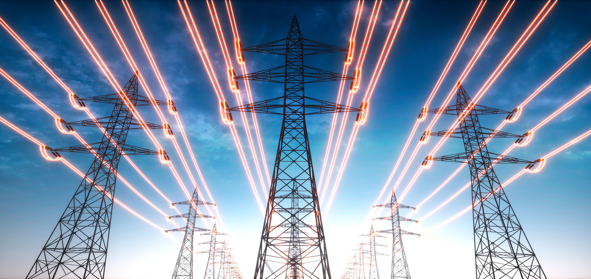

Chosing PC Parts
Noah Sullivan
This is a disassembled PC
Building a PC these days has many options that gives the user more choice than ever before with a wide range of GPUs and CPUs to choose from and thousands of cases so you are able to pick exactly the style that you want. With all these choices also creates a lot of confusion when it comes to what is best for you since this will not alway be the same depending on what your price range is and what you plan on doing with the pc. When it comes to the CPU picking this will depend mostly on what games you will be playing and if you plan on running any programs on the pc while playing a game such as using discord or having a chrome tab open. When it comes to the GPU this is one of the main factors when it comes to how many frames per second you will be able to play at. Because of this I recommend you pick your GPU based on what games you are playing and what monitor you will be using. This is because if you have a high refresh rate or high resolution monitor it will be much harder to max out your monitor so you will need a more powerful gpu. Below is a chart that compares the frames per second you can achieve on the 3090 and 4090 at 1440p resolution.
| Game | 3090 | 4090 |
|---|---|---|
| Call of Duty | 183 | 217 |
| Rocket Leugue | 347 | 428 |
| CS:GO | 547 | 611 |
Are New PC Parts Drawing Too Much Power?
Noah SullivanThe power requirements of new PC parts have sparked a debate in the tech community. As cutting-edge components offer impressive performance gains, some worry that they're consuming too much power. New PC parts often deliver mind-blowing performance, making gaming smoother and rendering faster. But here's the catch they often need more power to achieve this. Balancing power consumption with performance gains is the key challenge. Higher power consumption can contribute to increased carbon emissions and strain on energy resources. It's important for manufacturers to prioritize energy-efficient designs, and for consumers to make conscious choices when building or upgrading their systems. Thankfully, efforts are being made to mitigate the impact of increased power draw. Advances in power management and efficiency have helped offset some of the drawbacks. Technologies like dynamic power scaling and power-saving features optimize performance while minimizing unnecessary power usage during idle or low-demand periods. As consumers, we play a role in addressing power draw concerns. By selecting components that balance performance and efficiency, we can reduce our environmental impact. Simple practices, such as turning off systems when not in use or utilizing power-saving settings, can contribute to energy conservation. The debate on the power draw of new PC parts requires careful consideration of both performance needs and environmental concerns. While these components offer amazing capabilities, striking a balance between power consumption and efficiency is crucial. By prioritizing energy-efficient designs and responsible usage, we can enjoy the benefits of new PC parts while minimizing their impact on power consumption and working towards a greener future.
